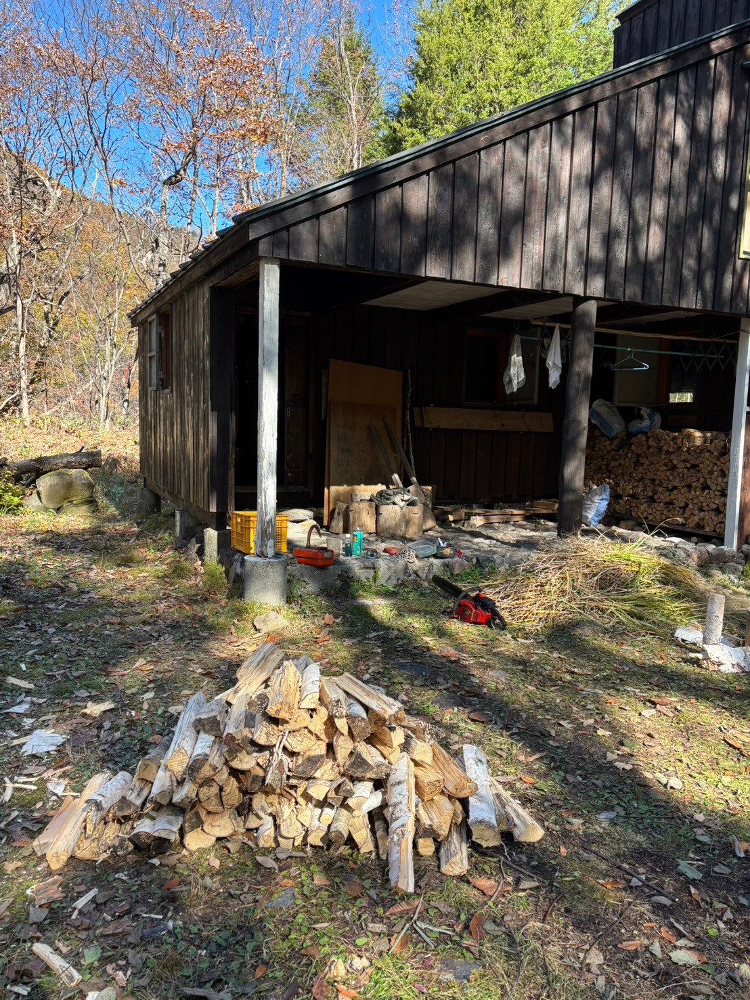
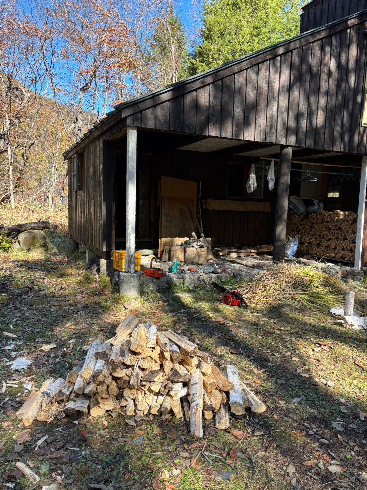

すもも荘とは
 「コリビングハウス乗鞍すもも荘」は、長野県乗鞍高原に位置する親子やクリエイター向けのシェアハウスです。自然豊かな環境の中で共同生活を楽しみながら、リモートワークや創作活動に最適な設備を提供。地域の人々とつながり、温かなコミュニティを築く場所です。webサイトを見る
「コリビングハウス乗鞍すもも荘」は、長野県乗鞍高原に位置する親子やクリエイター向けのシェアハウスです。自然豊かな環境の中で共同生活を楽しみながら、リモートワークや創作活動に最適な設備を提供。地域の人々とつながり、温かなコミュニティを築く場所です。webサイトを見る
すもも荘の日々


長野・乗鞍高原で開催されるアートイベント。
小さなお子様も楽しめるワークショップも開催。散歩をしながら、ゆったりとアートとふれあう時間をお過ごしください。
１．東京方面からの場合、JR中央本線・特急あずさ／高速バスなどで松本駅へ。
２．松本駅から新島々駅まで、アルピコ交通の鉄道・上高地線で約30分。
３．新島々駅から大野川学校前バス停まで、アルピコ交通の路線バス・乗鞍高原行きで約１時間。
４．大野川学校前バス停から徒歩３分ですもも荘に到着。ムササビ小屋は、脇道をさらに２分ほど進んだ場所にあります。
路線バスについて詳しくチェック（アルピコ交通のサイトへ移動）
「コリビングハウス乗鞍すもも荘」は、長野県乗鞍高原に位置する親子やクリエイター向けのシェアハウスです。自然豊かな環境の中で共同生活を楽しみながら、リモートワークや創作活動に最適な設備を提供。地域の人々とつながり、温かなコミュニティを築く場所です。webサイトを見る
すもも荘の日々
 武蔵野美術大学ワンダーフォーゲル部は、初代ムササビ小屋の建設以来、半世紀以上にわたり乗鞍高原を活動の拠点としてきました。現在のムササビ小屋は建立から30年の節目を迎え、大学サークルの活動拠点としてだけでなく、アートを通じて地域の皆様との交流の場となることを目指しております。
武蔵野美術大学ワンダーフォーゲル部は、初代ムササビ小屋の建設以来、半世紀以上にわたり乗鞍高原を活動の拠点としてきました。現在のムササビ小屋は建立から30年の節目を迎え、大学サークルの活動拠点としてだけでなく、アートを通じて地域の皆様との交流の場となることを目指しております。
メンテナンス合宿の様子
 
